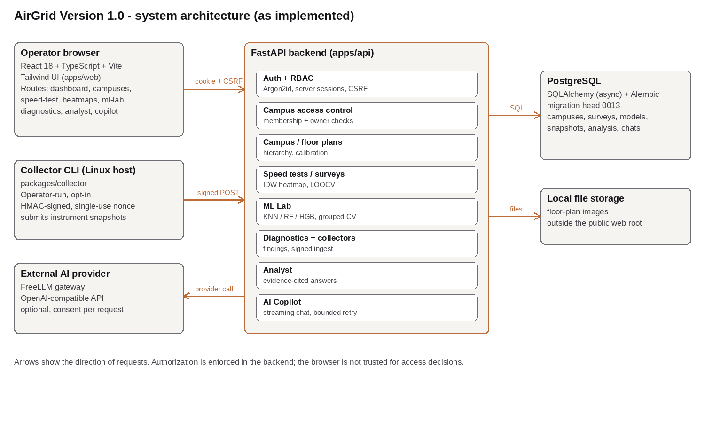
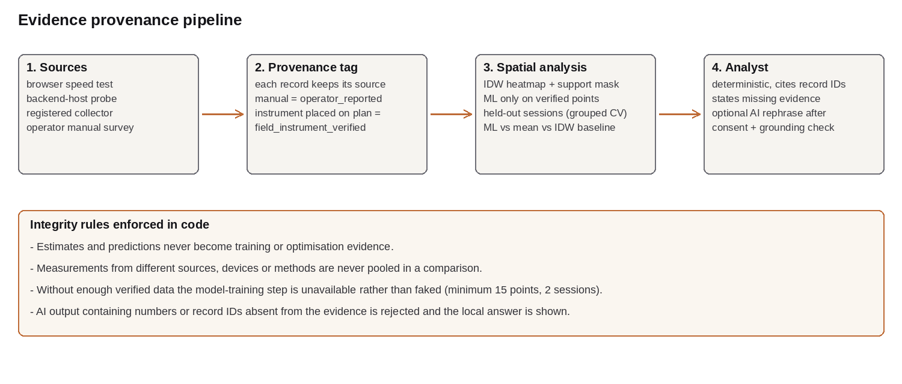
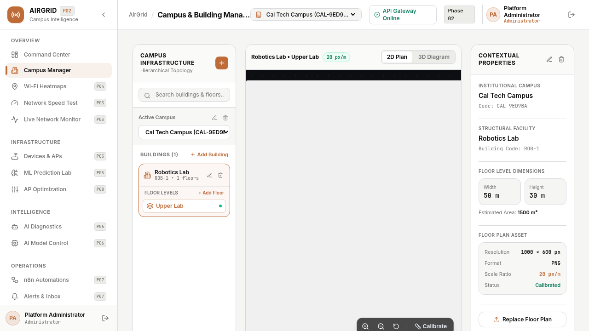
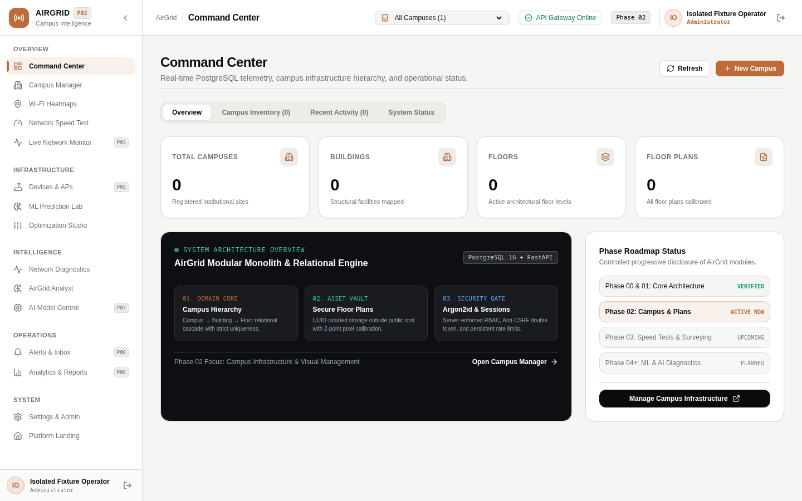
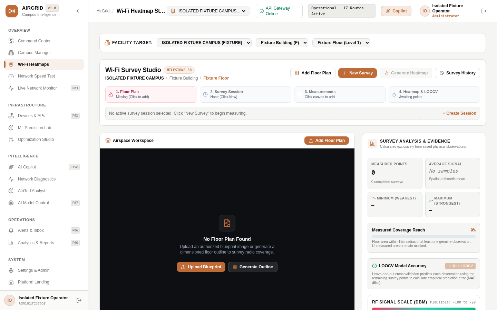
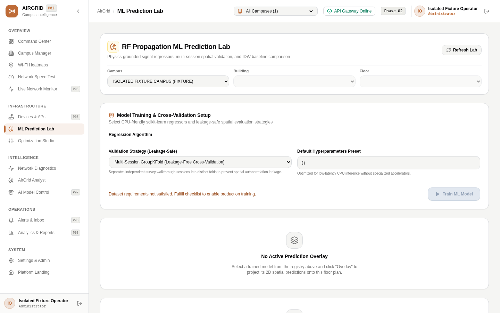
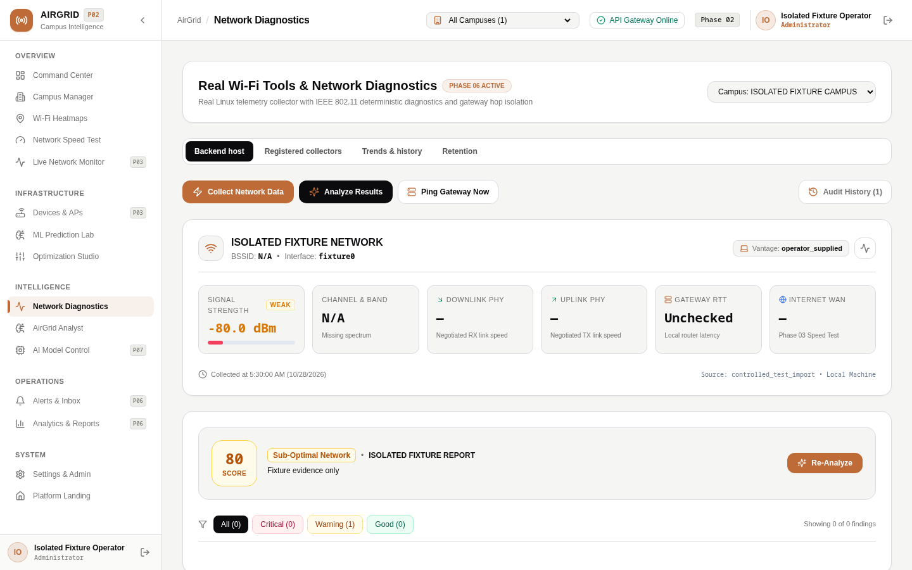
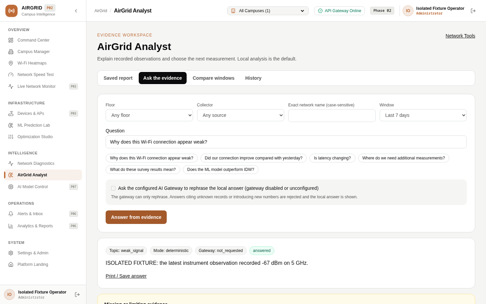
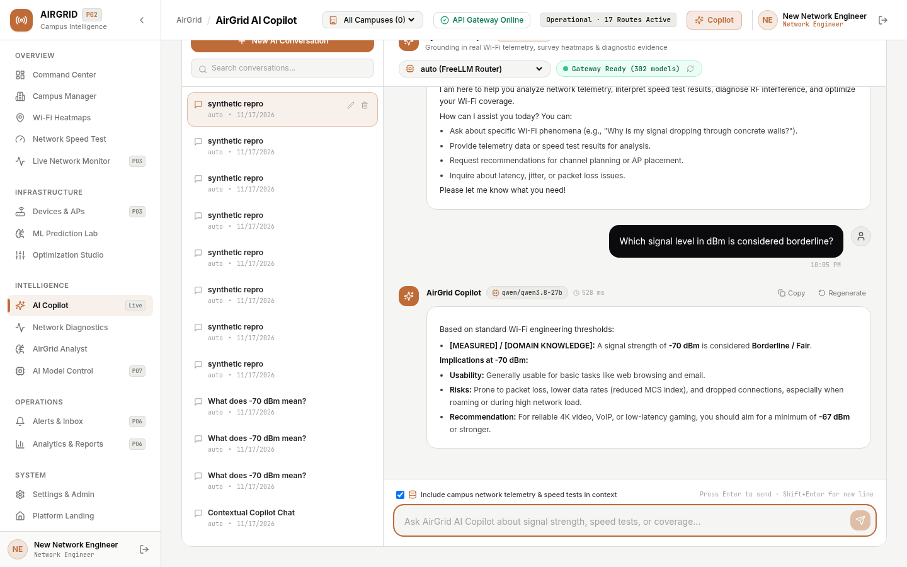
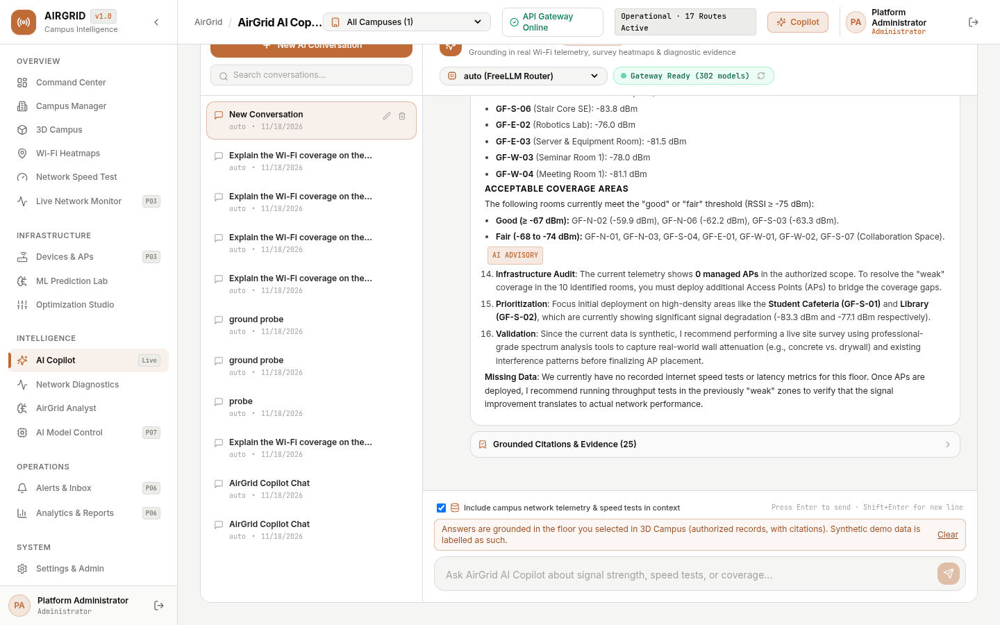

Campus Wi-Fi problems are usually investigated with isolated speed tests and anecdotal complaints, which cannot show where coverage is weak, and general-purpose AI assistants may invent causes for faults they cannot observe. This project presents AirGrid, a web platform that lets a network operator record measurements with explicit provenance, place them on calibrated floor plans of a campus hierarchy, and generate coverage heatmaps using inverse distance weighting restricted to measured spatial support. A machine-learning laboratory evaluates regressors on verified survey points only, deterministic diagnostics explain stored records, and a chat assistant runs through a server-side gateway with bounded retry. Access is controlled by sessions, roles, campus membership and record ownership, enforced on the server. After the 17 November 2026 submission checkpoint, an interactive three-dimensional model of a modelled campus building was added, with floor selection, room-level coverage and an assistant that answers questions about a selected floor using only authorized records and states when data are synthetic. The system uses React, FastAPI and PostgreSQL. At the checkpoint 242 automated tests passed; the later version passes 255 backend tests (one skipped) and 23 frontend component tests, and browser checks passed for the three-dimensional view, the assistant and 48 route and width combinations. The database holds no instrument-verified survey points, so no field accuracy is claimed. AirGrid shows that provenance-gated evidence and server-side authorization can keep network analysis traceable and honest.
Keywords—Wi-Fi survey, received signal strength, spatial interpolation, network diagnostics, access control, grounded language model.
Wireless local area networks built on the IEEE 802.11 family of standards [1] are the primary way students and staff reach campus services. The quality of a connection at a given spot depends on the received signal strength indicator (RSSI), measured in dBm, on interference, and on the load of the access point. Operators therefore need measurements taken at known places, not only network-wide averages. Signal-strength readings reported by different devices are not guaranteed to be directly comparable, so the origin of every reading matters.
In practice, complaints such as “the signal is weak in the laboratory” are handled with a single speed test on a single device, or with coverage maps that cannot be traced to measurements. Operators cannot easily tell where coverage is weak, whether a change improved it, or which statements a tool can honestly make. Closed commercial survey tools are costly and rarely explain how a value was produced, and conversational AI tools may state confident causes for problems that they cannot observe.
The topic was chosen because campus network quality directly affects teaching and research, and because the combination of measurements, floor plans and language-model assistance is useful only if its limits are explicit. The expected benefit is an operator workflow in which every displayed figure is traceable to a stored record or is shown as unavailable.
(1) To record browser, host and survey measurements with explicit provenance. (2) To model campuses, buildings and floors with calibrated floor plans. (3) To generate coverage heatmaps that do not extrapolate beyond measured support. (4) To implement and evaluate signal-prediction models using held-out sessions and baseline comparison, refusing unsuitable data. (5) To provide deterministic diagnostics and an assistant whose answers cite stored records. (6) To enforce authentication and campus-scoped authorization on the server.
Bahl and Padmanabhan [2] (2000) studied how signal strength measured at several base stations can locate a user inside a building. They combined empirical measurements with a radio propagation model and evaluated the approach in an office-building testbed, reporting location errors on the order of a few metres. The method depends on labour-intensive surveys and targets positioning rather than operator-facing diagnostics, which is the survey step AirGrid supports but for a different purpose.
Shepard [3] (1968) proposed an interpolation function for irregularly spaced data in which each known sample is weighted by the inverse of its distance, raised to a power, to the query point. It needs no training and is easy to explain, but its estimates are limited by sample density and it cannot judge whether a query lies outside the measured region. AirGrid uses this method as both the heatmap generator and a baseline, and adds a spatial support mask for that missing judgement.
Cover and Hart [4] (1967) analysed the nearest-neighbour rule and showed that its asymptotic error is bounded by twice the Bayes error; the result holds only for large samples, which survey data rarely provide. Breiman [5] (2001) introduced random forests, ensembles of randomized decision trees whose generalization error converges as trees are added; their predictions stay within the range of the training targets, which limits extrapolation. Pedregosa et al. [6] (2011) describe the scikit-learn library that implements these learners with a uniform interface and is used in this project. Kohavi [7] (1995) compared cross-validation with bootstrap estimation and recommended stratified ten-fold cross-validation for accuracy estimation. Survey points from one walk are spatially correlated, so AirGrid adapts the idea by keeping all points of a session in the same fold; that grouping is this project’s design choice and is not taken from [7].
Lewis et al. [8] (2020) combined a generative model with retrieved documents and reported better results than purely parametric models on knowledge-intensive tasks. Grounding reduces but does not remove unsupported statements. AirGrid is inspired by this idea but is not a vector-retrieval system: its assistant first builds an answer from stored records, and a language model may only rephrase it, after which numbers and record identifiers absent from the evidence cause the output to be rejected.
The Argon2 memory-hard function [9] (Biryukov et al., 2021) is specified for password hashing, and keyed-hash message authentication (HMAC) [10] (Krawczyk et al., 1997) authenticates messages with a shared secret. AirGrid uses the former for stored passwords and the latter to sign collector submissions.
Within the sources reviewed here, positioning work [2] and general methods [3]–[8] address individual steps. None of them packages provenance-gated measurements, a support-aware heatmap, held-out comparison against simple baselines, and an assistant that states missing evidence into one operator workflow with server-side access control. The contribution of AirGrid is this engineering integration and its integrity rules; it is not a new interpolation or learning algorithm.
AirGrid is a modular monolith (Fig. 1). The browser application communicates with the backend over HTTPS using an HttpOnly session cookie and a CSRF token. The backend contains routers and services for authentication, campuses, surveys, speed tests, machine learning, diagnostics, the analyst and the Copilot, and stores data in PostgreSQL and floor-plan images on local storage. A command-line collector on a Linux host submits HMAC-signed snapshots, and an external OpenAI-compatible gateway is called only from the server.

Fig. 1. System architecture of AirGrid Version 1.0 as implemented.
Fig. 2 shows how evidence moves from a source to an explanation. Each record keeps its provenance. Estimates and predictions never become training or optimization evidence, and measurements from different sources, devices or methods are not pooled.

Fig. 2. Evidence provenance pipeline and the integrity rules enforced in code.
No public dataset is used. Data are produced by operators: survey points placed on a calibrated plan, instrument snapshots, and speed tests. The model input is the normalised plan position (two features, x and y) and the target is RSSI in dBm. Only points whose provenance is field_instrument_verified are eligible for production training, and training for a floor is permitted only when there are at least 15 such points across at least 2 survey sessions with two-dimensional spatial spread. At the time of writing the application database contains no such points, so production training is unavailable. Model behaviour was therefore tested on synthetic fixtures in an isolated test database (a minimum of 6 fixture points is required in that mode). Typical data-quality issues are sparse and clustered points and a single measuring device.
The operations actually performed are: filtering by provenance; restricting a model to one network label so that different networks are not mixed; discarding records without finite signal values, position or time; and converting positions to coordinates normalised by plan size. No missing-value imputation, encoding or feature scaling beyond this normalisation is performed.
Inverse distance weighting (IDW) is used for the heatmap with power 2, a 0.5 m distance softening term, a 4 m convex-hull support buffer and an 18 m mask radius. It is transparent and needs no training, but cannot learn structure beyond distance; it also serves as the baseline a learned model must beat. k-nearest neighbours (k = 5, distance-weighted, Euclidean) is chosen as a non-parametric learner suited to small spatial samples; it is sensitive to sampling density. Random forest (50 trees, maximum depth 8) captures non-linear patterns and is robust to noise, but cannot extrapolate beyond observed values. Histogram gradient boosting (50 iterations, depth 5) was included as a stronger boosted alternative that may overfit on very small samples. A mean-value predictor is the second baseline. Assumptions are that signal varies smoothly with position and that the plan scale is calibrated.
Eligible points are selected as in Section III-C, a validation strategy is chosen, the model is fitted within each fold, predictions on the held-out fold are collected, and a final model is fitted on all eligible points and stored together with a floor-plan signature (floor, building, plan file, size, scale and calibration). A change to the plan invalidates the model and requires retraining. The default validation groups points by survey session using grouped k-fold with up to five folds; spatial block validation is also available. Random states are fixed at 42. The champion model of a floor is the one with the lowest held-out RMSE. Libraries: scikit-learn [6], NumPy, SQLAlchemy and FastAPI.
The task is regression, so mean absolute error (MAE), root mean squared error (RMSE) and the coefficient of determination (R²) are computed on held-out points. The learned model, the mean baseline and the IDW baseline are scored on the same held-out points that lie inside the interpolation support, which keeps the comparison fair. Classification metrics such as accuracy or F1-score are not used because they were not calculated. For the heatmap itself, leave-one-out cross-validation reports the error of IDW at each held-out measurement.
Backend: Python 3.12, FastAPI, Pydantic v2, SQLAlchemy 2 (asynchronous), Alembic and scikit-learn. Frontend: React 18, TypeScript, Vite and Tailwind CSS. Database: PostgreSQL 16 (migration head 0013). Testing: pytest with httpx and Playwright. Development and testing were performed on a single Linux machine with its own Wi-Fi interface; no dedicated measurement hardware or GPU was used, and no production deployment was made.
Authentication and authorization: Argon2id password hashes [9], server-side sessions, CSRF protection, four roles, campus membership, and owner-only access for records without a campus. Campus management: campus, building and floor hierarchy, floor-plan upload and scale calibration. Dashboard: inventory counts, campus inventory and audit activity scoped to the caller. Speed testing: an operator-started browser test with explicit consent and persisted history. Heatmaps: survey sessions, observations, IDW interpolation with a support mask and leave-one-out validation. Network diagnostics: opt-in host collection, registered collectors with HMAC-signed [10] ingestion, deterministic findings, trends and operator-applied retention. ML Lab: readiness checks, training and evaluation. Analyst: evidence-cited answers and history. Copilot: streaming chat through the gateway with bounded retry and per-user isolation.
An operator creates a campus, building and floor, uploads a plan and calibrates its scale (Fig. 3). Measurements are then recorded and the Command Center summarises the inventory (Fig. 4). In the heatmap studio the operator records points, generates the heatmap and validates it (Fig. 5), and the ML Lab reports readiness and, when data allow, evaluation results (Fig. 6). Diagnostics collect and analyse host snapshots (Fig. 7), the Analyst answers questions with cited records (Fig. 8), and the Copilot offers a chat interface backed by the gateway (Fig. 9). Figures 3 and 9 were captured from the real backend; Figures 4 to 8 were rendered by the real frontend against labelled synthetic fixtures and therefore show the interface, not live measurements.

Fig. 3. Campus manager with a calibrated floor plan (real backend, development data).

Fig. 4. Command Center showing the verification state of each module (synthetic fixture).

Fig. 5. Wi-Fi heatmap studio (synthetic fixture).

Fig. 6. ML Lab readiness and evaluation view (synthetic fixture).

Fig. 7. Network diagnostics (synthetic fixture).

Fig. 8. Analyst answer citing stored records (synthetic fixture).

Fig. 9. AI Copilot streaming a reply through the FreeLLM gateway (real backend and provider).
The work in this subsection was done after the v1.0-submission checkpoint and is kept on a separate branch, so the checkpoint results above are unchanged. Campus model. A building modelled in Blender was exported in the glTF 2.0 format [11] and is displayed in the browser with the three.js library [12]. The page supports orbit, zoom and pan, a camera reset, viewing the whole building or one floor, and selecting a room. Blender uses a Z-up right-handed system, whereas glTF is Y-up, so a point (x, y, z) in Blender maps to (x, z, −y); the floor-plan image coordinates follow px = W/2 + x·s and py = H/2 − y·s for image size W by H and scale s pixels per metre. A unit test checks known corner coordinates against the exported calibration. Room coverage. Each room receives the mean of the survey points inside it or, if none, the value of the existing inverse-distance-weighting engine at the room centre; rooms outside the measured support are shown as unknown. This is an interpolation of survey points and not a radio-propagation simulation, and walls in the model are not used for prediction. Synthetic demonstration data. Because no field survey exists, a deterministic seed program generates labelled demonstration points from assumed access-point positions; these are stored with the provenance controlled_test_import and are shown to the user as synthetic. They are not measurements, and error values computed on them (a leave-one-out mean absolute error of 3.4 to 3.9 dB on the three floors) describe the interpolation of the generated data only. Floor-grounded assistant. The user selects a floor and asks a question; the server checks campus access before storing the question and before any call to the language-model provider, on both the ordinary and the streaming endpoint. The answer is built from room records with citations, and private records are sent only to a gateway on the local machine unless an operator explicitly approves an external provider. Fig. 10 shows an answer for the ground floor that states that the data are synthetic and lists weak rooms with their estimated values.

Fig. 10. AI Copilot answering a question about a selected floor, with synthetic-data disclosure and citations (demonstration database).
The Blender model files are not part of the public repository, so the three-dimensional view works only where a local copy of the model is configured; without it the page reports that the model is unavailable. Screenshots of the three-dimensional view are therefore not included in this repository copy of the report.
All checks ran locally. Backend tests used an isolated PostgreSQL test database and synthetic data only; the browser check used labelled fixtures and blocked every external request. Table I summarises the verification outcomes, and Table II groups the 223 test functions by area (some are parameterised, giving 243 collected tests).
TABLE I. VERIFICATION OUTCOMES AT THE 17 NOVEMBER 2026 CHECKPOINT
| Check | Result |
|---|---|
| Backend test suite (pytest) | 242 passed, 1 skipped, 0 failed |
| Skipped test | Live-provider integration test; requires a local environment file |
| Frontend production build | Succeeded (large-chunk warning only) |
| Browser verification | 10 routes, 2 viewport widths, 0 page errors, 15 external requests blocked, 0 live probes |
| Authorization regression tests | 8 tests; all failed before the fixes and pass after |
TABLE II. TEST FUNCTIONS BY AREA AT THE CHECKPOINT
| Area | Test functions |
|---|---|
| Authentication, authorization and isolation | 38 |
| Campuses and dashboard | 12 |
| Speed testing | 9 |
| Surveys, interpolation and heatmaps | 33 |
| Diagnostics and collectors | 43 |
| ML Lab and optimization | 17 |
| Analyst, AI gateway and provider integration | 32 |
| AI Copilot | 14 |
| Database, health, safety and webhooks | 25 |
| Total | 223 |
The authorization audit reproduced defects with failing tests before each fix (Table III). A review of an earlier push had reported eight issues but itemized only some; the remaining ones were covered by a search for the same pattern, so the list below is the set that could be demonstrated, not a proof that no other defect exists.
TABLE III. AUTHORIZATION DEFECTS REPRODUCED AND CLOSED
| Area | Defect before the fix |
|---|---|
| Diagnostics | Reports and snapshots with no campus readable or deletable by any user |
| Survey comparison | No access check on either compared session |
| ML models | Prediction map, promotion, deletion and listing ignored the model’s campus |
| Analyst | History and evidence not scoped to the caller |
| Collectors and speed tests | Observations and history not scoped by campus or owner |
| Dashboard | Inventory, counts and audit feed exposed all campuses and users |
For the later version, the checks were repeated (Table IV). The browser checks used a separate demonstration database; the language-model provider was intermittently slow, and the assistant check needed two retries offered by the interface before a grounded answer was returned.
TABLE IV. VERIFICATION OF THE LATER VERSION (18 AND 19 NOVEMBER 2026)
| Check | Result |
|---|---|
| Backend test suite (pytest) | 255 passed, 1 skipped, 0 failed (256 collected; re-run on 19 November 2026 after the hardening passes described below) |
| Frontend component tests (Vitest) | 23 passed (13 at the first verification; 10 added in the hardening passes for HTML escaping, the Copilot service and the Monitor page; viewer, floor and room selection, overlays, missing model, loading and error states, assistant floor context) |
| Frontend production build | Succeeded |
| Browser: three-dimensional campus | 16 of 16 checks passed, no page or console errors |
| Browser: floor-grounded assistant | 9 of 9 checks passed after two provider retries |
| Browser: all routes at 1440, 768 and 390 px | 48 of 48 passed, no API or page errors, no horizontal overflow |
Post-checkpoint hardening (18 and 19 November 2026, after the submission checkpoint). A second independent code review of the later version found and fixed the following; each has a regression test, and none of it existed at the 17 November checkpoint. (1) The telemetry trends endpoint returned speed tests and daily aggregates of other campuses when a collector filter was supplied or no filter was given, and allowed any authenticated user to read a collector that had no campus. (2) Regenerating a Copilot reply did not re-check campus membership. (3) The printable report window wrote record fields (titles, SSIDs) into HTML without escaping. (4) The Copilot client silently fell back to browser storage and to a different server endpoint when a request failed, which could duplicate messages and keep conversations after logout; it now reports the error. (5) Production start-up now refuses the development default secrets, and floor-plan uploads are read with a size bound. (6) The Settings page no longer shows fixed “Operational” or “Connected” values when the health request fails. (7) A later check of the running application found that the Copilot Retry button failed with “Nothing to retry” when the connection dropped before the server stored the message (now treated as an ordinary send, stored once), and that the Monitor page always showed 0 recorded snapshots because it read a field the API does not return. Internal build-phase badges and a fixed “Operational · 17 Routes Active” label were removed. Real Wi-Fi names, a host name and addresses that appeared in test fixtures were replaced with synthetic values in the current files; they remain in earlier Git history and in nine earlier screenshots, which is reported to the repository owner. (8) On 19 November 2026 the nine repository screenshots that displayed a real Wi-Fi name, a neighbouring access point, a host name and local addresses were replaced by redacted versions, and the same values were replaced by synthetic ones in tests and notes. The original images remain in earlier Git history, which was not rewritten; this is reported to the repository owner. The screenshots in Figs. 3 to 10 were captured before the build-phase badges and the fixed “Operational · 17 Routes Active” label were removed from the interface, so those elements still appear in them, and the sidebar entry now reads “Network Monitor” instead of “Live Network Monitor”; the current application differs only in those labels. These checks used synthetic data only. The three-dimensional view was re-checked on 19 November 2026 against the original Blender export (16 of 16 browser checks), the assistant check passed 9 of 9, the resilience check 8 of 8 and the route sweep 48 of 48, all on the synthetic demonstration database.
The Copilot was exercised against the live gateway: a question returned a streamed reply from a provider-reported model with a latency of 528 ms in the captured example (Fig. 9). Latency varies with the free-tier provider and is not a performance guarantee.
MAE, RMSE and R² are implemented as described in Section III-F, but no values from real field data can be reported: the application database holds no instrument-verified survey points, and quoting figures from synthetic fixtures would not describe real network behaviour. This report therefore makes no accuracy claim for the spatial models.
The system is designed to compare the learned models with the mean and IDW baselines on identical held-out points and to state the verdict in the interface; because no field data exist, no comparison table is presented, and no ranking of the algorithms is claimed. No comparison with published systems is made because their datasets and settings are not comparable.
The most useful outcome of the project is the set of integrity rules: provenance tags, refusal to train on unverified data, support-aware heatmaps and grounding checks. The authorization audit showed that a missing-campus value tended to disable a check (a fail-open pattern); the remedy was to deny access whenever ownership cannot be established. Limitations are: no field validation; on-demand rather than continuous monitoring; several interface pages (devices, monitor, alerts, reports) that load data from the API but were checked only for loading without errors, not with field data; rate limits held per process; model identity reported by the provider and not verified; and open dependency advisories in development tooling and an unused server-rendering path of the routing library, while the Python packages with advisories (Pillow, certifi, dnspython, opentelemetry-api) were upgraded before release.
AirGrid Version 1.0 delivers authentication and campus-scoped authorization, campus management, a dashboard, speed testing, survey heatmaps, network diagnostics, an evidence-cited analyst and a gateway-backed Copilot, each supported by automated tests and demonstrations. The objectives on provenance, calibrated modelling, support-aware heatmaps, honest model evaluation and server-side authorization were achieved in software. The objective of evaluating models on real campus data could not be met yet because no verified field data have been collected. The later additions of a three-dimensional campus view and a floor-grounded assistant (Section IV-D) passed their automated and browser checks, but they operate on synthetic demonstration data and so demonstrate the workflow, not field accuracy.
The next steps follow from the limitations: a physical field survey to collect verified data and publish measured model accuracy; continuous monitoring and alerting backed by the API; a shared rate-limit store and multi-worker deployment; automated dependency and security scanning in continuous integration; and field validation of the three-dimensional coverage view, which currently shows interpolated synthetic demonstration data (Section IV-D), together with a publicly distributable model asset once its release has been authorized.
[1] IEEE Standard for Information Technology—Telecommunications and Information Exchange between Systems—Local and Metropolitan Area Networks—Specific Requirements—Part 11: Wireless LAN Medium Access Control (MAC) and Physical Layer (PHY) Specifications, IEEE Std 802.11-2020, 2021.
[2] P. Bahl and V. N. Padmanabhan, “RADAR: An in-building RF-based user location and tracking system,” in Proc. IEEE INFOCOM, 2000, pp. 775–784.
[3] D. Shepard, “A two-dimensional interpolation function for irregularly-spaced data,” in Proc. 23rd ACM National Conf., 1968, pp. 517–524.
[4] T. Cover and P. Hart, “Nearest neighbor pattern classification,” IEEE Trans. Inf. Theory, vol. 13, no. 1, pp. 21–27, 1967.
[5] L. Breiman, “Random forests,” Mach. Learn., vol. 45, no. 1, pp. 5–32, 2001.
[6] F. Pedregosa et al., “Scikit-learn: Machine learning in Python,” J. Mach. Learn. Res., vol. 12, pp. 2825–2830, 2011.
[7] R. Kohavi, “A study of cross-validation and bootstrap for accuracy estimation and model selection,” in Proc. 14th Int. Joint Conf. Artificial Intelligence (IJCAI), 1995, pp. 1137–1143.
[8] P. Lewis et al., “Retrieval-augmented generation for knowledge-intensive NLP tasks,” in Advances in Neural Information Processing Systems, vol. 33, 2020, pp. 9459–9474.
[9] A. Biryukov, D. Dinu, D. Khovratovich, and S. Josefsson, “Argon2 memory-hard function for password hashing and proof-of-work applications,” RFC 9106, Sep. 2021.
[10] H. Krawczyk, M. Bellare, and R. Canetti, “HMAC: Keyed-hashing for message authentication,” RFC 2104, Feb. 1997.
[11] Khronos Group, “glTF 2.0 specification,” 2021. [Online]. Available: https://registry.khronos.org/glTF/specs/2.0/glTF-2.0.html
[12] R. Cabello and contributors, “three.js: JavaScript 3D library.” [Online]. Available: https://threejs.org